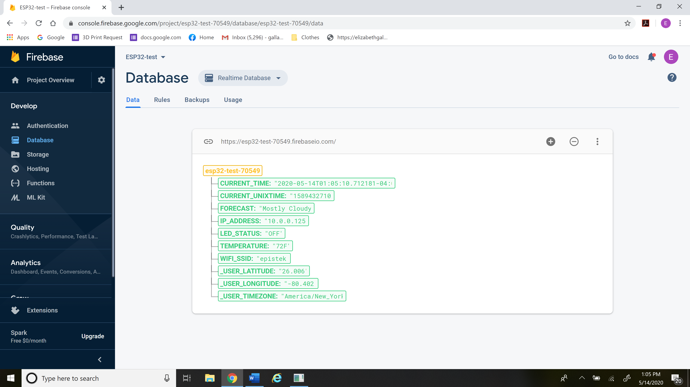

Prototyping & Testing

The coming to be of the shade seeking flower pot
Firebase communicates with a weather API to collect relevant information. From the Firebase console, we can manually override any information that is being sent to the microcontroller on the Flower Cart.
Firebase communicates with all the Flower Carts that are set up in is network.
